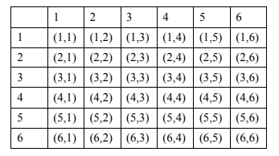
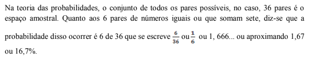
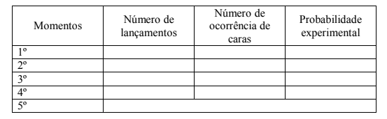

Capítulo 3
PROBABILIDADE E ESTATÍSTICA NO CONTEXTO DA INDÚSTRIA TÊXTIL E DO VESTUÁRIO
ContextualizandoA indústria teve o seu crescimento e surgimento por volta do século XVII e final do século XIX com a Primeira Revolução Industrial, que ocorreu na Inglaterra e se espalhou para os demais países. As indústrias, nessa época, usavam o vapor como meio de locomoção das máquinas para a fabricação dos produtos. Somente com a Segunda Guerra Mundial e com o avanço da tecnologia, o homem passou a usar a eletricidade e o petróleo. E o que podemos chamar da Terceira Revolução Industrial, que ocorreu por volta de 1970, foi a industrialização por meio da informática, que revolucionou o mercado e atravessa os tempos com grandes avanços. A indústria têxtil vai muito além de ser apenas uma atividade econômica, que com o passar do tempo e com a evolução da mão de obra e da tecnologia, ela proporciona ao homem o processo de produzir novos produtos transformando a matéria-prima. Esse processo ocorre com a ajuda de mão de obra do homem, de equipamentos (máquinas) e com o auxílio da probabilidade, prevendo incertezas nos processos de produção. Com o suporte da probabilidade e da estatística a indústria cresce e consegue meios cada vez mais eficientes de produção e comercialização, otimizando os seus processos. Existem vários tipos de indústrias como a de bens de produção, de bens de consumo e de bens intermediários. Por meio das indústrias, fabricamos, praticamente, todos os produtos que utilizamos em nosso dia a dia.
Como calcular a probabilidade de um evento acontecer?
Caro aluno! Nesse capítulo, você vai entender a ideia de chance e estudar o que é e como se calcula a probabilidade de um evento acontecer.
(RE)CONSTRUINDO CONHECIMENTOSA PROBABILIDADE
Um dos objetivos da probabilidade é estudar as incertezas dos acontecimentos. Antes de lidar com a teoria das probabilidades, precisamos entender o significado do aleatório e, para isso é importante que você vivencie algumas experiências que tenham como objetivo quantificar o conceito de probabilidade.
ATIVIDADE PRÁTICA
Faça a atividade descrita a seguir:
Tenha dois dados de cores diferentes, um branco e um preto, por exemplo. Lance os dois dados ao mesmo tempo várias vezes e complete a tabela com pares ordenados de tal forma que o 1o elemento do par refira ao dado preto e o 2o elemento refira ao dado branco. Despreze as jogadas em que os pares se repetem.
Depois de registrar algumas jogadas e você perceber como os pares se formam na tabela, complete-a.
Depois de registrar algumas jogadas e você perceber como os pares se formam na tabela, complete-a.
1) Quantos são todos os resultados possíveis no lançamentos dos 2 dados?
2) Em quantos dos 36 lançamentos, saíram números iguais nos dois dados?
3) Em quantos dos 36 lançamentos saiu soma 7?
4) Em quantos lançamentos saiu a soma 1?
5) Em quantos lançamentos saiu a soma 12?
6) Em quantos lançamentos a soma é maior do que 12?
Na questão 1, você respondeu que lançando simultaneamente, dois dados de cores diferentes, você obtém 36 pares ordenados diferentes e que esse é o número máximo de pares ordenados que você pode conseguir com dois dados de cores diferentes, ordenando os resultados, conforme a combinação das cores. Na questão 2, observando e contando os pares ordenados com números iguais, você respondeu que tem 6 pares ordenados dos 36 que têm números dobrados. Na questão 3 também foram 6 os pares diferentes da tabela que somam 7. Verificou respondendo a questão 4 não há pares cuja soma dos elementos seja 1. Na questão 5 você respondeu 1 porque só tem um par cuja soma é 12. Por fim na questão 6 a reposta foi nenhum porque não há pares ordenados na tabela cuja soma dos elementos seja mais de 12 unidades.
Acesse o vídeo clicando no link a seguir:
CALCULANDO PROBABILIDADES
Com o lançamento de um dado, determina-se que:
a) O conjunto S dos resultados possíveis dos lançamentos é S = {1,2,3,4,5,6}.
b) A ocorrência de número maior que 4 é B= {5, 6}.
c) A ocorrência de um número par é C = {2. 4. 6}.
d) A ocorrência de um número ímpar é D = {1, 3, 5}.
e) A ocorrência de um número ser menor que 4 é E = {1, 2,3}.
Se o dado for perfeito, há alguma razão para que um número saia mais facilmente do que o outro? Se ao lançar o dado e Pedro apostar que sai o 2 e Maria que sai o 5, qual dos dois estará em vantagem? Qual dos dois terá mais chance de ganhar?
Certamente ambos terão a mesma chance de acertar, pois a probabilidade de sair o 2 ou o 5 é
1 em 6 para cada um o que pode ser expresso por 1/6 ou 0,167 ou 16,7%, como você já sabe.
No caso dos números maiores ou menores que 4 a chance de Pedro é menor do que a de Maria pois a probabilidade de Pedro de ganhar é 2/6 = 0,333 ou aproximadamente 33%, e a de Maria ganhar é de que 3/6 ou 0,5 ou 50%.
Você deve ter percebido que probabilidade é uma medida de tendência e não de certeza, pois no evento C referente a sair um número par, como a probabilidade é 1/2 ou 50%, espera-se que a cada duas jogadas saia um número par, mas não se pode garantir que isso ocorra. No entanto, se o dado for perfeito e jogarmos muitas vezes, a tendência de 1 para 2 ficará evidente e isso significa que há 50% de chance de sair a face par. A ideia de que é necessário fazer muitos lançamentos para que a tendência se evidencie.
PRATICANDO- AÇÃO E REFLEXÃO.Com a ideia de que é necessário fazer muitos lançamentos para que a tendência se evidencie, faça a seguinte atividade e determine experimentalmente a probabilidade. Reproduza a tabela a seguir e lance uma moeda quantas vezes você quiser durante 3 minutos em momentos diferentes de um ou mais dias e anote na tabela o número de caras que sair.
Some o número de lançamentos e obtenha o número total de lançamentos, o número total de ocorrências de sair cara é a probabilidade experimental.
Divida o número que representa a ocorrência de sair cara e pelo número total de lançamentos, Se você obtiver um resultado próximo de 50%, você obteve experimentalmente, com muitos lançamentos a tendência de 1 para 2 que significa que no lançamento de uma moeda, é 50% de chance de sair a face cara.
O QUE APRENDI.
Trabalhando com atividades práticas aprendi que a probabilidade é uma medida que pode ser calculada e que nos possibilita saber a chance de um evento ocorrer, conhecendo o espaço amostral e o número de ocorrências do evento. Compreendemos que a probabilidade é uma medida de tendência e não de certeza.